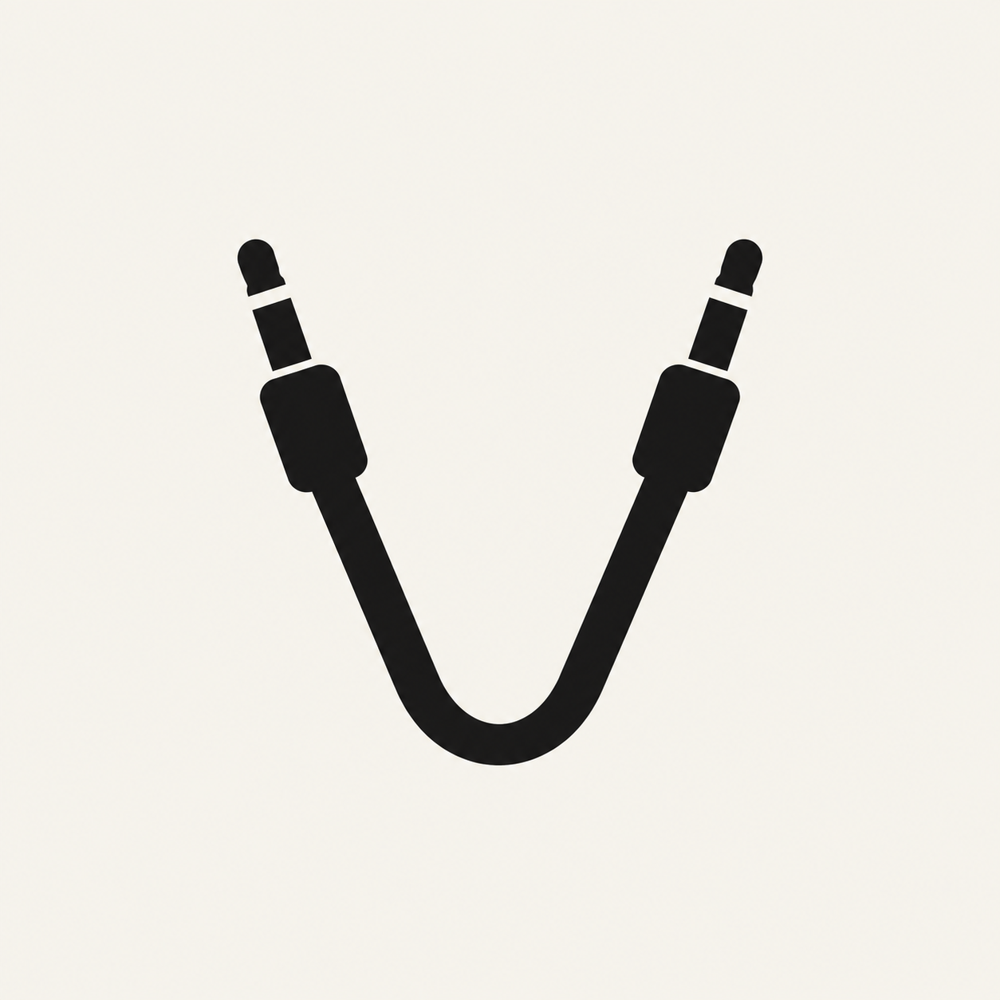

Voice Debug HarnessGitHub ↗Same audio.
Every test.
Feed a WAV into a Chromium microphone. Repeat your voice tests without repeating yourself.
Give this to your agentGive your agent the proof job.
Open this repository in Claude Code or Codex. The real Chromium check should return measured silence before the feed and measured audio afterward.
Use the API in your Playwright test ↗Prove this browser microphone starts silent and receives the fixture. Report the measured audio level from the actual Chromium check.
Try the microphone.
Node.js 20 or later. No model account. This is the manual visual demo.
Read the API and CLI reference ↗git clone https://github.com/firstbitelabsllc/voice-debug-harness.git cd voice-debug-harness npm ci npx playwright install chromium npm run demo